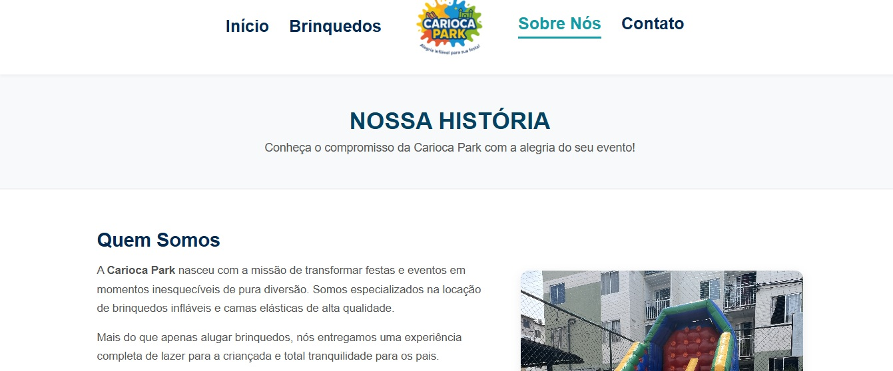
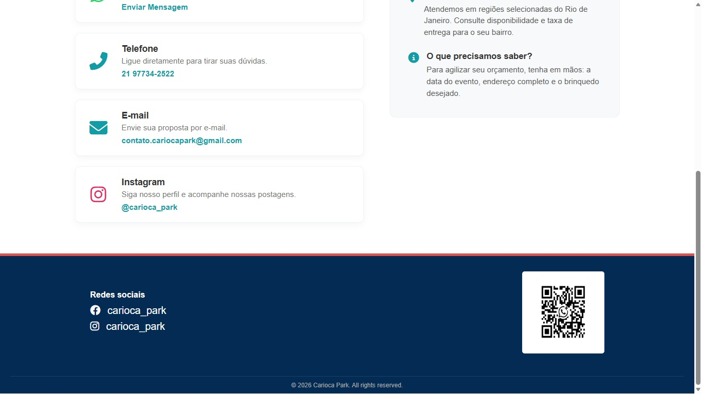

Carioca Park
Confira abaixo a galeria completa de telas e detalhes do sistema de agendamento e controle desenvolvido para a gestão de locações.



Confira abaixo a galeria completa de telas e detalhes do sistema de agendamento e controle desenvolvido para a gestão de locações.

